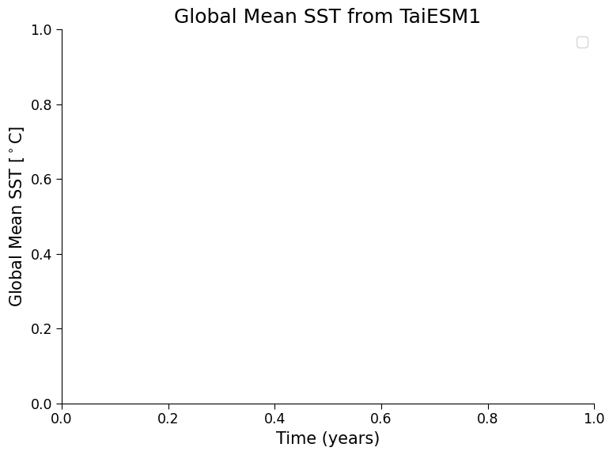

Tutorial 8: Time Series, Global Averages, and Scenario Comparison#
Week 1, Day 5, Introduction to Climate Modeling
Content creators: Julius Busecke, Robert Ford, Tom Nicholas, Brodie Pearson, and Brian E. J. Rose
Content reviewers: Mujeeb Abdulfatai, Nkongho Ayuketang Arreyndip, Jeffrey N. A. Aryee, Younkap Nina Duplex, Sloane Garelick, Paul Heubel, Zahra Khodakaramimaghsoud, Peter Ohue, Jenna Pearson, Abel Shibu, Derick Temfack, Peizhen Yang, Cheng Zhang, Chi Zhang, Ohad Zivan
Content editors: Paul Heubel, Jenna Pearson, Ohad Zivan, Chi Zhang
Production editors: Wesley Banfield, Paul Heubel, Jenna Pearson, Konstantine Tsafatinos, Chi Zhang, Ohad Zivan
Our 2024 Sponsors: CMIP, NFDI4Earth
Tutorial Objectives#
Estimated timing of tutorial: 25 minutes
In this tutorial, we will expand to look at data from three CMIP6/ScenarioMIP experiments (historical, SSP1-2.6, and SSP5-8.5). Our aim will be to calculate the global mean SST for these 3 experiments, taking into account the spatially varying size of the model’s grid cells (i.e., calculating a weighted mean).
By the end of this tutorial, you’ll be able to:
Load and analyze CMIP6 SST data from different experiments.
Understand the difference between historical and future emission scenarios.
Calculate the global mean SST from gridded model data.
Apply the concept of the weighted mean to account for varying grid cell sizes in Earth System Models.
Setup#
# installations ( uncomment and run this cell ONLY when using google colab or kaggle )
# !pip install condacolab &> /dev/null
# import condacolab
# condacolab.install()
# # Install all packages in one call (+ use mamba instead of conda), this must in one line or code will fail
# !mamba install "xarray==2024.2.0" xarray-datatree intake-esm gcsfs xmip aiohttp nc-time-axis cf_xarray xmip xarrayutils &> /dev/null
# imports
import intake
import numpy as np
import matplotlib.pyplot as plt
import xarray as xr
from xmip.preprocessing import combined_preprocessing
from datatree import DataTree
from xmip.postprocessing import _parse_metric
Install and import feedback gadget#
Show code cell source
# @title Install and import feedback gadget
!pip3 install vibecheck datatops --quiet
from vibecheck import DatatopsContentReviewContainer
def content_review(notebook_section: str):
return DatatopsContentReviewContainer(
"", # No text prompt
notebook_section,
{
"url": "https://pmyvdlilci.execute-api.us-east-1.amazonaws.com/klab",
"name": "comptools_4clim",
"user_key": "l5jpxuee",
},
).render()
feedback_prefix = "W1D5_T8"
Figure settings#
Show code cell source
# @title Figure settings
import ipywidgets as widgets # interactive display
plt.style.use(
"https://raw.githubusercontent.com/neuromatch/climate-course-content/main/cma.mplstyle"
)
%matplotlib inline
Video 1: Future Climate Scenarios in CMIP6#
Submit your feedback#
Show code cell source
# @title Submit your feedback
content_review(f"{feedback_prefix}_Future_Climate_Scenarios_Video")
If you want to download the slides: https://osf.io/download/yg9du/
Submit your feedback#
Show code cell source
# @title Submit your feedback
content_review(f"{feedback_prefix}_Future_Climate_Scenarios_Slides")
Section 1: Load CMIP6 SST Data from Several Experiments Using Xarray#
In the last tutorial, we loaded data from the SSP5-8.5 (high-emissions projection) experiment of one CMIP6 model called TaiESM1.
Let’s expand on this by using data from three experiments
historical: a simulation of 1850-2015 using observed forcing,
SSP1-2.6: a future, low-emissions scenario, and
SSP5-8.5: a future, high-emissions scenario.
Due to the uncertainty in how future emissions of greenhouse gases and aerosols will change, it is useful to use a range of different emission scenarios as inputs, or forcings to climate models. These scenarios (SSPs) are datasets that are based on different socio-economic conditions in the future, such as population growth, energy consumption, energy sources, and climate policies. Learn more about forcing scenarios here, and learn more about the CMIP6 scenarios here.
To learn more about CMIP, including the different experiments/scenarios, please see our CMIP Resource Bank and the CMIP website.
# open an intake catalog containing the Pangeo CMIP cloud data
col = intake.open_esm_datastore(
"https://storage.googleapis.com/cmip6/pangeo-cmip6.json"
)
# pick the experiments you require
experiment_ids = ["historical", "ssp126", "ssp585"]
# from the full `col` object, create a subset using facet search
cat = col.search(
source_id="TaiESM1",
variable_id="tos",
member_id="r1i1p1f1",
table_id="Omon",
grid_label="gn",
experiment_id=experiment_ids,
require_all_on=[
"source_id"
], # make sure that we only get models which have all of the above experiments
)
# convert the sub-catalog into a datatree object, by opening each dataset into an xarray.Dataset (without loading the data)
kwargs = dict(
preprocess=combined_preprocessing, # apply xMIP fixes to each dataset
xarray_open_kwargs=dict(
use_cftime=True
), # ensure all datasets use the same time index
storage_options={
"token": "anon"
}, # anonymous/public authentication to google cloud storage
)
# construct sub-catalog datatree with attributes
cat.esmcat.aggregation_control.groupby_attrs = ["source_id", "experiment_id"]
dt = cat.to_datatree(**kwargs)
---------------------------------------------------------------------------
ModuleNotFoundError Traceback (most recent call last)
Cell In[9], line 2
1 # open an intake catalog containing the Pangeo CMIP cloud data
----> 2 col = intake.open_esm_datastore(
3 "https://storage.googleapis.com/cmip6/pangeo-cmip6.json"
4 )
5
File ~/micromamba/envs/climatematch/lib/python3.11/site-packages/intake/__init__.py:82, in __getattr__(attr)
80 if attr[:5] == "open_":
81 if attr[5:] in registry.drivers.enabled_plugins():
---> 82 driver = registry[attr[5:]] # "open_..."
83 return driver
84 else:
File ~/micromamba/envs/climatematch/lib/python3.11/site-packages/intake/source/__init__.py:30, in DriverRegistry.__getitem__(self, item)
28 it = self.drivers.enabled_plugins()[item]
29 if hasattr(it, "load"):
---> 30 return it.load()
31 if isinstance(it, str):
32 return import_name(it)
File ~/micromamba/envs/climatematch/lib/python3.11/importlib/metadata/__init__.py:202, in EntryPoint.load(self)
197 """Load the entry point from its definition. If only a module
198 is indicated by the value, return that module. Otherwise,
199 return the named object.
200 """
201 match = self.pattern.match(self.value)
--> 202 module = import_module(match.group('module'))
203 attrs = filter(None, (match.group('attr') or '').split('.'))
204 return functools.reduce(getattr, attrs, module)
File ~/micromamba/envs/climatematch/lib/python3.11/importlib/__init__.py:126, in import_module(name, package)
124 break
125 level += 1
--> 126 return _bootstrap._gcd_import(name[level:], package, level)
File <frozen importlib._bootstrap>:1204, in _gcd_import(name, package, level)
File <frozen importlib._bootstrap>:1176, in _find_and_load(name, import_)
File <frozen importlib._bootstrap>:1126, in _find_and_load_unlocked(name, import_)
File <frozen importlib._bootstrap>:241, in _call_with_frames_removed(f, *args, **kwds)
File <frozen importlib._bootstrap>:1204, in _gcd_import(name, package, level)
File <frozen importlib._bootstrap>:1176, in _find_and_load(name, import_)
File <frozen importlib._bootstrap>:1149, in _find_and_load_unlocked(name, import_)
File <frozen importlib._bootstrap>:705, in _load_unlocked(spec)
File <frozen importlib._bootstrap_external>:940, in _LoaderBasics.exec_module(self, module)
File <frozen importlib._bootstrap>:241, in _call_with_frames_removed(f, *args, **kwds)
File ~/micromamba/envs/climatematch/lib/python3.11/site-packages/intake_esm/__init__.py:6
4 # Import intake first to avoid circular imports during discovery.
5 import intake
----> 6 from pkg_resources import DistributionNotFound, get_distribution
8 from . import tutorial
9 from .core import esm_datastore
ModuleNotFoundError: No module named 'pkg_resources'
dt
Coding Exercise 1.1#
In this tutorial and the following tutorials we will be looking at the global mean sea surface temperature. To calculate this global mean, we need to know the horizontal area of every ocean grid cell in all the models we are using.
Write code to load this ocean-grid area data using the previously shown method for SST data, noting that:
We now need a variable called areacello (area of cells in the ocean)
This variable is stored in table_id Ofx (it is from the ocean model and is fixed/constant in time)
A model’s grid does not change between experiments so you only need to get grid data from the historical experiment for each model
#################################################
## TODO for students: Replace the ellipses with appropriate strings according to the given CMIP6 facet. ##
## Hint: Check the facet list in Section 1.1 of Tutorial 7 for a brief explanation of each term. ##
# Remove the following line of code once you have completed the exercise:
raise NotImplementedError("Student exercise: Replace the ellipses with appropriate strings according to the given CMIP6 facet.")
#################################################
cat_area = col.search(
source_id = "TaiESM1",
# Add the appropriate variable_id
variable_id = ...,
member_id = "r1i1p1f1",
# Add the appropriate table_id
table_id = ...,
grid_label = "gn",
# Add the appropriate experiment_id
experiment_id = [...],
require_all_on = ["source_id"],
)
# construct sub-catalog datatree with attributes
cat_area.esmcat.aggregation_control.groupby_attrs = ["source_id", "experiment_id"]
dt_area = cat_area.to_datatree(**kwargs)
# instantiate a DataTree object
dt_with_area = DataTree()
# add the sub-catalog to the DataTree object via map_over_subtree()
for model, subtree in dt.items():
metric = dt_area[model]["historical"].ds["areacello"]
dt_with_area[model] = subtree.map_over_subtree(_parse_metric, metric)
Submit your feedback#
Show code cell source
# @title Submit your feedback
content_review(f"{feedback_prefix}_Coding_Exercises_1_1")
Section 2: Global Mean Sea Surface Temperature (GMSST)#
The data files above contain spatial maps of the sea surface temperature for every month of each experiment’s time period. For the rest of today’s tutorials, we’re going to focus on the global mean sea surface temperature, rather than maps, as a way to visualize the ocean’s changing temperature at a global scale\(^*\).
The global mean of a property can be calculated by integrating that variable over the surface area of Earth covered by the system (ocean, atmosphere, etc.) and dividing by the total surface area of that system. For Sea Surface Temperature, \(SST(x,y)\), the global mean (\(GMSST\)) can be written as an integral over the surface of the ocean (\(S_{\text{ocean}}\)):
where \(x\) and \(y\) are horizontal coordinates (i.e. longitude and latitude). This formulation works if \(SST(x,y)\) is a spatially-continuous function, but in a global model we only know the \(SST\) of discrete grid cells rather than a continuous \(SST\) field. Integrals are only defined for continuous variables, we must instead use a summation over the grid cells (summation is the discrete equivalent of integration):
where \((i,j)\) represent the indices of the 2D spatial \(SST\) data from a CMIP6 model, and \(A\) denotes the area of each ocean grid cell, which can vary between cells/locations, as you saw in the last tutorial where TaiESM1 had irregularly-gridded output. This calculation is essentially a weighted mean of the \(SST\) across the model cells, where the weighting accounts for the varying area of cells - that is, larger cells should contribute more the global mean than smaller cells.
\(^*\)Note: we could alternatively look at ocean heat content, which depends on temperature at all depths, but it is a more intensive computation that would take too long to calculate in these tutorials.
Coding Exercise 2.1#
Complete the following code so that it calculates and plots a time series of global mean sea surface temperature from the TaiESM1 model for both the historical experiment and the two future projection experiments, SSP1-2.6 (low emissions) and SSP5-8.5 (high emissions).
As you complete this exercise, consider the following questions:
In the first function, what
xarrayoperation is the following line doing, and why is it necessary?
return ds.weighted(ds.areacello.fillna(0)).mean(['x', 'y'], keep_attrs=True)
How would your time series plot change if you instead took a simple mean of all the sea surface temperatures across all grid cells? (Perhaps your previous maps could provide some help here).
def global_mean(ds: xr.Dataset) -> xr.Dataset:
"""Global average, weighted by the cell area"""
return ds.weighted(ds.areacello.fillna(0)).mean(["x", "y"], keep_attrs=True)
# average every dataset in the tree globally via map_over_subtree() function introduced in Tutorial 7
dt_gm = ...
# create plot
fig, ax = plt.subplots()
for experiment in ["historical", "ssp126", "ssp585"]:
# slice tos data array of experiment
da = ...
# draw data
_ = ...
ax.set_title("Global Mean SST from TaiESM1")
ax.set_ylabel("Global Mean SST [$^\circ$C]")
ax.set_xlabel("Time (years)")
ax.legend()
/tmp/ipykernel_8704/3842275989.py:18: UserWarning: No artists with labels found to put in legend. Note that artists whose label start with an underscore are ignored when legend() is called with no argument.
ax.legend()
<matplotlib.legend.Legend at 0x7ff713a01550>

Example output:

Submit your feedback#
Show code cell source
# @title Submit your feedback
content_review(f"{feedback_prefix}_Coding_Exercises_2_1")
Question 2.1: Climate Connection#
Is this plot what you expected? If so, explain what you expected, and why, from the historical experiment, and the SSP1-2.6 and SSP5-8.5 scenarios (see below for a potentially useful figure).
For context, here is Figure TS.4 from the Technical Summary of the IPCC Sixth Assessment Report, which shows how several elements of forcing differ between experiments (including historical and SSP experiments). In the video above we saw the CO\(_2\) panel of this figure:

Figure TS.4 | The climate change cause–effect chain: The intent of this figure is to illustrate the process chain starting from anthropogenic emissions, to changes in atmospheric concentration, to changes in Earth’s energy balance (‘forcing’), to changes in global climate and ultimately regional climate and climatic impact-drivers. Shown is the core set of five Shared Socio-economic Pathway (SSP) scenarios as well as emissions and concentration ranges for the previous Representative Concentration Pathway (RCP) scenarios in year 2100; carbon dioxide (CO2) emissions (GtCO2yr–1), panel top left; methane (CH4) emissions (middle) and sulphur dioxide (SO2), nitrogen oxide (NOx) emissions (all in Mt yr–1), top right; concentrations of atmospheric CO2(ppm) and CH4 (ppb), second row left and right; effective radiative forcing for both anthropogenic and natural forcings (W m–2), third row; changes in global surface air temperature (°C) relative to 1850–1900, fourth row; maps of projected temperature change (°C) (left) and changes in annual-mean precipitation (%) (right) at a global warming level (GWL) of 2°C relative to 1850–1900 (see also Figure TS.5), bottom row. Carbon cycle and non-CO2 biogeochemical feedbacks will also influence the ultimate response to anthropogenic emissions (arrows on the left). {1.6.1, Cross-Chapter Box 1.4, 4.2.2, 4.3.1, 4.6.1, 4.6.2}
Credit: IPCC
Submit your feedback#
Show code cell source
# @title Submit your feedback
content_review(f"{feedback_prefix}_Questions_2_1")
Summary#
In this tutorial, you diagnosed changes at a global scale by calculating global mean time series with CMIP6 model mapped data. You then synthesized and compared global mean SST evolution in various CMIP6 experiments, spanning Earth’s recent past and several future scenarios.
We started by loading CMIP6 SST data from three different scenarios: historical, SSP1-2.6 (low-emissions future), and SSP5-8.5 (high-emissions future). This process expanded our understanding of model outputs. We then focused on calculating global mean SST, by taking into account the spatially discrete and irregularly gridded nature of this model’s grid cells through a weighted mean. This weighted mean approach yielded the global mean SST, providing a holistic view of the Earth’s changing sea surface temperatures under multiple future climate scenarios.
Resources#
This tutorial uses data from the simulations conducted as part of the CMIP6 multi-model ensemble.
For examples on how to access and analyze data, please visit the Pangeo Cloud CMIP6 Gallery
For more information on what CMIP is and how to access the data, please see this page.